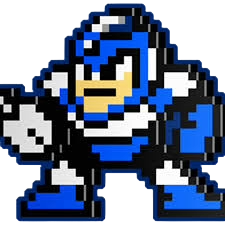

To beat Flash Man in Mega Man 2, use the Metal Blade (obtained from Metal Man), which kills him in four hits and allows you to juggle him against the wall. Alternatively, use the Crash Bomber for high damage. Stay near the center, jump over his shots, and attack immediately after he stops time.
Flash Man is a Robot Master from Mega Man 2 (1988) created by Dr. Wily to combat Mega Man. Found in an ice-themed stage, he controls time using his "Time Stopper" weapon, which freezes Mega Man in place for a short time. He is considered one of the easier bosses, weak to the Metal Blade and Crash Bomber.